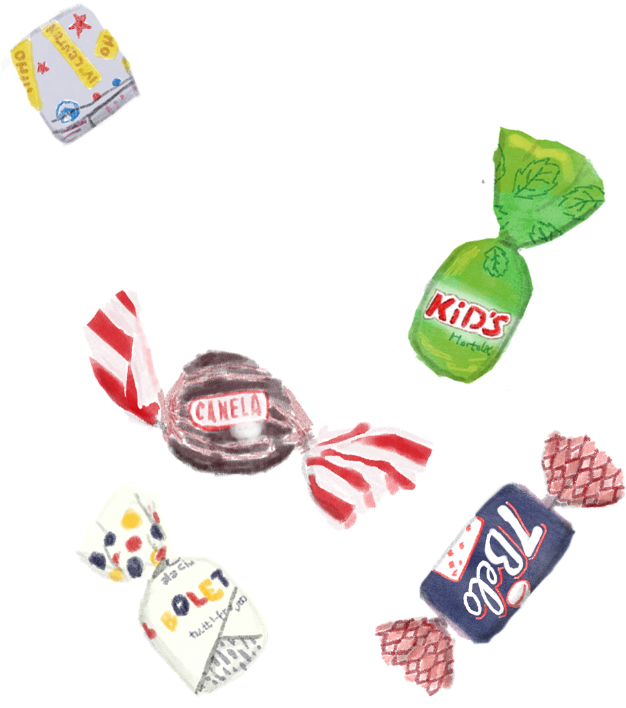

Sobremesa
Enquanto encerro este trabalho, persiste o isolamento social. A conclusão apoteótica na mesa do bar, tão sonhada desde o início deste longo processo, seria inconcebível perto da situação atroz pela qual passa o país.
Confesso que a opção pelo boteco como tema de pesquisa foi fruto de uma escolha pessoal, que tange a mesquinhez, e que visava, dentre outras coisas, uma boa desculpa para a prática da boemia. Não posso negar, contudo, que os botecos tiveram um papel importante neste outro ciclo que se fecha: o da minha própria vivência universitária.
A partir de uma perspectiva íntima sobre esses espaços de afetos pela cidade – pelo olhar de quem habita parte reduzidíssima de seu território – tentei oferecer, de bandeja, uma degustação da essência tipológica, formal e urbana desses locais. Essa, porém, não pode ser identificada se descolada da identidade e das personalidades humanas que dão vida a esses estabelecimentos. A honestidade dos botecos põe a nu questões e contradições sociais, mas proporciona, também, escapes e soluções.
Para além das vigas, pilares e paredes, o boteco é feito de memórias, aspirações, anseios, sonhos, desilusões, conquistas, fracassos retumbantes, alegrias e invenções da vida daqueles que passaram por suas mesas e balcões¹.
Resta-me, então, torcer para que voltemos a ocupar esses lugares. Enquanto espero, faço o gesto universal da caneta imaginária e encerro: me vê a conta, por favor?
